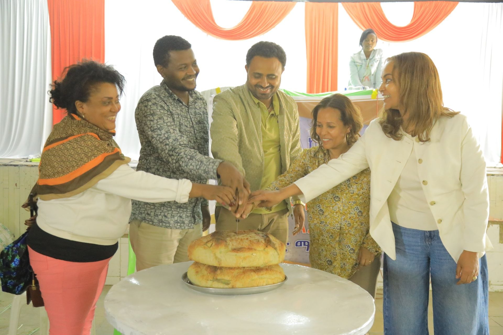

Work alongside communities
Support locally guided programs built around dignity, trust, and the priorities of the people we serve.
Join Eneho Fikir’s community of volunteers and help create practical, lasting change for children, schools, women, youth, and families.


One team
Many ways to help
You do not need to have all the answers. Bring your care, reliability, and willingness to learn—we will help connect your strengths with a genuine community need.
Support locally guided programs built around dignity, trust, and the priorities of the people we serve.
Contribute professional skills, creative energy, field support, or simply your time and enthusiasm.
Build experience, understand community development, and grow through purposeful collaboration.
Opportunities depend on current program needs, location, and availability. Select any areas that feel like a good fit in the interest form.
Tutoring, reading support, youth mentorship, school activities, and learning-resource preparation.
Help qualified teams with health education, campaigns, event coordination, and community awareness.
Photography, design, writing, social media, translation, and ethical documentation of our work.
Contribute expertise in technology, research, fundraising, administration, finance, or training.
Support donation drives, community events, material distribution, environmental activities, and logistics.
Help from wherever you are with digital projects, research, communications, or specialist advice.
We match people to needs carefully so that volunteering is useful, safe, and rewarding for everyone involved.

Tell us about your skills, preferred role, location, and availability using the form below.
Our team will contact you when a suitable need is available and discuss expectations and fit.
You will receive role guidance, safeguarding expectations, and any program-specific preparation.
Join your activity with a clear point of contact, agreed responsibilities, and feedback along the way.
Our programs center the safety, dignity, and privacy of children and communities.
Complete this short form. It will open a prepared email in your mail app for you to review and send to our team.
Submitting interest does not guarantee immediate placement. We contact applicants based on suitable opportunities and program needs.
No. Many opportunities value commitment, care, and willingness to learn. Roles needing specialist knowledge will clearly require relevant experience or credentials.
Yes, when remote projects are available. These may include communications, design, research, fundraising support, technology, translation, or specialist advice.
It varies—from one-time activities to recurring or project-based roles. Tell us honestly what you can sustain and we will look for an appropriate match.
Students are welcome to express interest. Opportunities for anyone under 18 must be age-appropriate and may require parent or guardian consent and direct supervision.
Documentation may be available after successfully completing an agreed placement. Please discuss your requirement with the team before starting.